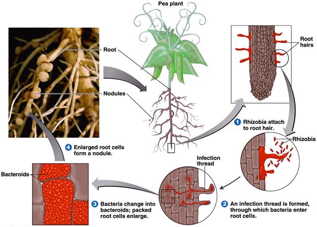

AMBE 101 :: Lecture 18 :: BIOLOGICAL NITROGEN FIXATION

Fixation of elemental nitrogen in the atmosphere by the micro organism through a reductive process into ammonia is called as BNF. A variety of prokaryotic organism have the ability to reduce the atmosphere N2 BNF accounts for about 70% of the total N fixed in the biosphere. The ability to reduce atmosphere N is restricted only to bacteria, which are belonging to the diverse groups. The root nodule associations were the first to be recognized for their ability to fix atmosphere N2. Rhizobia are the first group of organism realized for its potential of nitrogen fixation.
Nitrogen fixing bacteria
Nitrogen fixing bacteria are classified according to their mode of fixation.
- Free living N fixers – capable of fixing mol. N2 to cellular N independently of other living organism.
- Associative N fixers
- Endophytic N fixers
- Symbiotic N fixers
Rhizobium is predominant symbiotic N2 fixing bacterium. Boussingault showed that leguminous plant can fix atmosphere N2. Then hellriegel and wilfarth – proved that N2 is fixed by certain bacteria living in root nodules of leguminous plants. Latter isolated in pure culture by Beijerinck. Winogradsky isolated clostridium pasteurianum. Which is an anaerobic N2 fixer. Beijerinck isolated Azotobacter as free living aerobic N2 fixing organisms.
Cross inoculation groups of rhizobium (CIG)
It (CIG) refers the groups of leguminous plants that will develop effective nodules when inoculated with the rhizobia obtained from the nodules from any member of that legume group.
I. Rhizobium
1. |
Rhizobium leguminosarum |
CIG |
Host it can nodulate |
|
bv. viceae |
Pea |
Peas,lenfils, vicia |
|
bv. phaseoli |
Bean |
Phaseolus spp |
|
bv. trifoli |
Clover |
Trifolium spp |
2. |
R. meliloti |
Alfalfa |
Alfalfa, clover, fenugreek |
3. |
R. loti |
Lotus |
Trifoli, lupine, |
4. |
R. fredii |
Soybean |
Soybean |
5. |
R. spp |
Cowpea group |
Vigna, Arachis, Cajanus, Dolichus, Sesbania, Acacia, Prosopis, green gram and blackgram |
6. |
R. sp |
Chickpea group |
Chickpea |
II. Bradyrhizobium
- B. japonicum Soybean
- B. spp Cowpea group
III. Azorhizobium - Stem nodulating – one. Nodulates Sesbania rostrata.
IV. Photorhizobia - Nodulants aeschynomene sp.
V. Sinorhizobium - fast growing soybean nodulator
I. Biological nitrogen fixation
Free living nitrogen fixers
- Azotobacter - Aerobic
- Beijerinckia
- Clostridium – Anaerobic
- Cyanobacteria (Blue green algae) etc.,
II. Associative symbiotic nitrogen fixer
Azospirillum
Herbaspirillum
III. Endophytic nitrogen fixer
Gluconacetobacter diazotrophicus
IV. Symbiotic nitrogen fixers
- Rhizobium (Rhizobium – legume association)
- Bradyrhizobium (Bradyrhizobium – soybean association)
- Azorhizobium (Azorhizobium- Sesbania rostrata association)
- Anabaena azollae (Azolla – Anabaena association)
- Frankia (Frankia – Casuarina association)
Species of Azospirillum
- lipoferum
- brasilense
- amazonense
- halopareferans
- irkense
- A.largomobilis
Species of Azotobacter
- chroococcum
- vinelandii
- beijerinkii
- paspali
- agilis
- insignis
- macrocytogens
Important genera of blue green algae
Anabaena, Nostoc, Cylindrospermum, Rivularia, Oscillatoria, Plectonema, Aphanothece, Lyngbya, Scytonema, Calotrhix etc.,
Species of Azolla
- pinnata
- filiculoides
- microphylla
- caroliniana
- mexicana
- nilotica
Nitrogen fixation
Process of N2 fixation
The process of N2 fixation is mediated by the enzyme, called nitrogenase (which mediates the reduction of N2 to ammonia) first, this enzyme was extracted from the anaerobic di nitrogen fixer Clostridum pasteurianum. Latter, this has been isolated form most other N2 fixing bacteria.
The mechanism of N2 fixation appears to be quite similar in most N2 fixing prokaryotes. The enzyme has been fairly well characterized and the enzymes from these different systems share common properties allowing a unified single doscription of nitrogenase.
Nitrogenase
Nitrogeanse is a functional enzyme which reduces N2 to ammonia and depends on energy source from ATP. The nitrogenase has two components one containing Mo-Fe, designated as Mo – Fe protein and the other Fe protein . Two components are necessary for the nitrogenase activity.
Mo-Fe protein
Consists of 4 subunits and having the molecular not of 22,0000 or 270,000 daltons and it is the big component.
Fe-protein
Smaller component, contains 2 subunits, molecular weight 60,000 daltons.
Ammonia is the end product of N2 fixation. The over all reaction is as follows.
ATP
N2 + 3H2 2 NH3
General pathway of N2 fixation
This process requires a source of ATP and reductants, which are provided by photosynthesis. 16 molecules of ATP are required to fix a molecule of N2.
|
|
ATP generation |
ATP |
|
ADP |
|
|
|
|
|
N=N |
Energy source |
|
Electron carriers |
|
Nitrogenase complex |
|
|
|
|
|
|
NH3 |
Nitrogenase can also reduce C2 H2 → C2H4
Hydrolysis of ATP into ADP with electron transfer from a reduced electron donor (Ferridoxin, Flavodoxin) is coupled to reduce N2 to 2NH3. The ammonia is the first stable product of fixation and it is assimilated by GS-GOGAT pathway.
NADH |
|
|
|
|
|
|
|
|
|
NADPH |
e- |
|
e- |
|
e- |
|
e- |
|
|
|
|
Ferridoxin |
|
Flarodoxin |
|
Ubiquinone |
|
|
|
APP |
|
|
|
|
|
|
|
|
|
EMP |
|
e- Carrier proteins |
|
|
|
NII |
NI |
||
EDP |
|
|
|
|
|
|
|
|
|
Glycolysis |
|
|
|
|
|
|
|
|
|
Nitrogenase is O2 labile various protection mechanism are operating in different N2 fixing systems.
Mechanism
Reduction takes place on the surface of the enzyme
- Six electrons are required to reduce one mole of N to two moles of ammonia.
N2 + 8H+ +8e- +16 ATP -------2 NH3+16 ADP+ 2H+ +16pi
It is postulated that, atoms of N2 are separated thr’h charge in the valency of metal ion (mo) bound to the enzyme involved in reduction of N2. For every electron transfer, 4 ATP mole are required.
Hydrogenase -Uptake hydrogenase (HUP+) converts the release d hydrogen during N2 fixation, and cycled back the Hydrogen for energy generation.by this they contribute 9-10 %ATP requirement for N2 fixation process.
Formation of a Root Nodule
Factors affecting N2 fixation
- Presence of nitrate or ammonium : More N2, No, N2 fixation
- Presence of certain inorganic substances
Ca, Co, Mo – influence N2 fixation along with P
- Availability of energy source – addn. of C source increase N2 fixation
- pH : Neutral – favours Azotobacter – Acidic- Beijerinkia
- Soil moisture : Adequate is good for fixation
- Temperature: Mesophilic – 30°C.
The energy requirement for BNF is very high and it is a major factor determines the amount of N2 fixed. In, Azotobacter the rate depends on amount of available carbon. In symbiotic N2 fixers since photosynthesis is the ultimate source of energy the rate of N2 fixation is influenced by the factors that effect photosynthesis and rate of translocating photosynthates to the N2 fixing system.
Nitrogenase protection mechansims
- Leghaemoglobin scavenges O2 to protect nitrogenase in legume rhizobium symbiosis
- Confirmatory protection in Azotobacter as well as the higher respiratory rate.
- Thick walls of Heterocyst protect O2 in BGA, since Nitrogenase are present in the heterocyst.
- Microaerophilic nature in Azospirillum
Losses of N by non biological ways
Leaching
20 to 50%of fertilizer N. The most striking loss of N in rice soils where more than half of the fertilizer N applied get lost through leaching.
Volatalization
Another factor is the volatalizaiotn of ammonia in soil 5-20%.
Fixation of ammonium in soils is the minor contributory factor to overall loss of N2 available for plant growth.
Such losses of N by physical causes and by nitrification and denitirfication process can be controlled by the application of certain chemicals. Some chemicals have been designed to control the rate of release of nutrient from nitrogenous fertilizers, while others retard nitrification in soil by controlling the activity of nitrifying bacteria.
a. Controlled release fertilizers
| Urea from... isobutyeldene diurea Crotonilidene diurea S coated urea |
Fertilizers, sparingly soluble in water can regulate the release of N from fertilizers |
b. Nitrification inhibitors
These are substituted with pyridines, pyrimidines, anilines and isothiocyanates,
Examples
1. 2 chloro 6 (tricholormethyl) – pyridine – (N serve )
2. 2 amino 4 chloro 6 methyl pyridine –( AM.)
N serve inhibits the growth of Nitrosomonas europea and N. agilis.
The seeds of neem conain lipid associates act as nitrification inhibitors and there by increases the efficiency of urea fertilizers.
Ammonia assimilation
N2 fixation results in NH4 formation which reacts with organic acids and form amino acids which is mediated by ammonia assimilating enzyme.
GS – Glutamine synthetase
GOGAT – Glutamate synthese
GDH – Glutamate dehydrogenase
Genetics
Nif genes are responsible for N2 fixation.
Nif genes are 22, which are located in 7 or 8 clusters.
GENETICS OF NODULATION AND N FIXATION
Root nodule bacteria and symbiosis with legumes
One of the most interesting and important plant bacterial interactions is that between leguminous plants and certain gram negative nitrogen fixing bacteria. Rhizobium, Bradyrhizobium, Sinorhizobium, Mesorhizobium and Azorhizobium are gram negative motile rods. Infection of the roots of a leguminous plant with the appropriate species of one of these genera leads to the formation of root nodules that are able to convert gaseous nitrogen to combined nitrogen, a process called nitrogen fixation. Nitrogen fixation by legume Rhizobium, symbiosis is of considerable agricultural importance, as it leads to very significant increases in combined nitrogen in the soil. Because nitrogen deficiencies often occur in unfertilized bare soil, modulated legumes are at a selective advantage under such conditions and can grow well in areas where other plants cannot.
- CIG refers, the groups of leguminous plants that will develop effective nodules when inoculated with the rhizobia obtained from the nodules from any member of that legume group.
Stages in root nodule formation
The stages in the infection and development of root nodules are not fairly well understood. They include
- Recognition of the correct parameter on the part of both plant and bacterium and attachment of the bacterium to the root hairs.
- Excretion of nod factors by the bacterium.
- Invasion of the root hairs by the bacterial formation of an infection thread.
- Travel to main root via the infection thread.
- Formation of deformed bacterial cells, bacteroids, within the plant cells and development of the nitrogen fixing state.
- Continued plant and bacterial division and formation of the mature root nodule.
Nodulation events
- Normal root hair
- Exudation of organic substances
- Accumulation of rhizobia in the rhizosphere
- Orientation and binding of rhizobia
- IAA production
- Root hair curling and deformation
- Formation of infection thread by rhizobia
- Formation of sheperd’s crook cells and entry of infection thread
- Thread containing bacteroids extending into root hair cells
- Entry of infection thread into cortex and branching
- Nodule development
Attachment and infection
The roots of leguminous plants secrets a variety of organic compounds that stimulate the growth of a rhizosphere micro flora. This stimulation is not restricted to the rhizobia but occurs with a variety of rhizosphere bacteria. If there are rhizobia in the soil, they grow in the rhizosphere and build up to high population densities. Attachment of bacterium to plant in the legume Rhizobium symbiosis is the first step in the formation of nodules. A specific adhesion protein called rhicadhesin is present on the surface of all species of Rhzobium and Bradyrhizobium. Rhicadhesin is a calcium-binding protein and may function by binding calcium complexes on the root hair surface. Other substances, such as carbohydrate-containing protein called lectins, also play in plant bacterium attachment.
Initial penetration of Rhizobium cells into the root hair is via the root hair tip. following binding, the root hair curls as a result of the action of substances excreted by the bacterium called nod factor and the bacteria enter the root hair and induce formation by the plant of a cellulosic tube, called infection thread, which spreads done the root hair. Root cells adjacent to the root hairs subsequently become infected by rhizobia and nod factors stimulate plant cell division, eventually leading to formation of the nodule.
Bacterioids
Bacteriods are specifically referred to a swallon deformed Rhizobium cellfound in the root nodule,capable of nitrogen fixation
The Rhizobium bacteria multiply rapidly with in the plant cells and are transformed into swollen, misshapen and branched forms called bacteroids. When the plant dies, the nodules can be deteriorates, releasing bacteria into the soil. The bacterioid forms are incapable of division, but there are always a small number of dormant rod shaped cells present in the nodule. These now proliferate; using some of the products of the deteriorating nodule as nutrients, and the bacteria can initiate the infection in other roots or maintain a free living existence in the soil.
Lectins
Plant proteins which specifically bind to carbohydrate receptors (polysaccharides) in the rhizobial cell
Genetics of nodule formation
Genes directing specific steps in nodulation of a legume by a strain of Rhizobium are called nod genes. Many nod genes from different Rhizobium species are highly conserved and are borne on large plasmids called sym plasmids. In addition to nod genes which direct specific nodulation events, sym plasmids contain specificity gene, which restrict a strain Rhizobium to a particular host plant. Indeed cross inoculation group specificity can be transferred across species of rhizobia by simply transferring the respective sym plasmid.
In the sym plasmid of Rhizobium leguminosarum bio var viciae, nod genes are located between two clusters of genes for nitrogen fixation the nif genes. Ten nod genes have been identified in this species. The nod ABC genes are involved in the production of oligosaccharides called nod factors, which induce root hair curling and trigger plant cell division, eventually leading to formation of the nodule. In Rhizobium leguminosarum bio var viciae, the gene nodD encodes a regulatory protein; this controls transcription of other nod genes.
Nod D genes
- Genes directing specific steps in nodulation of a legume by a strain of rhizobium are called Nod genes
- Nod genes are born on large plasmids ,called sym plasmids
- Nod genes are located between two clusters of genes for N2 fixation called Nif genes
- Nod gene consists of 8 genes
- nod A,B,C,D,E,F,L,M
- nod D controls the function of all nod genes
Nif Genes
- Genes responsible for N fixation are called Nif genes
- 22 genes are involved, arranged in 7 /8 clusters
- Nif Q,B,A,L,F,M,Z,W,V,S,U,X,N,E,Y,T,K,D,H,J
- KDH – control Nitrogenase enzyme complex
Factors affecting nodulation
- Temperature and light
- Combined Nitrogen
- Hydrogen iron concentration
- Mineral nutrition-Co,Mo,P,Ca
- Genetic factors
- Ecological factors
- Salinity and alkalinity
| Download this lecture as PDF here |